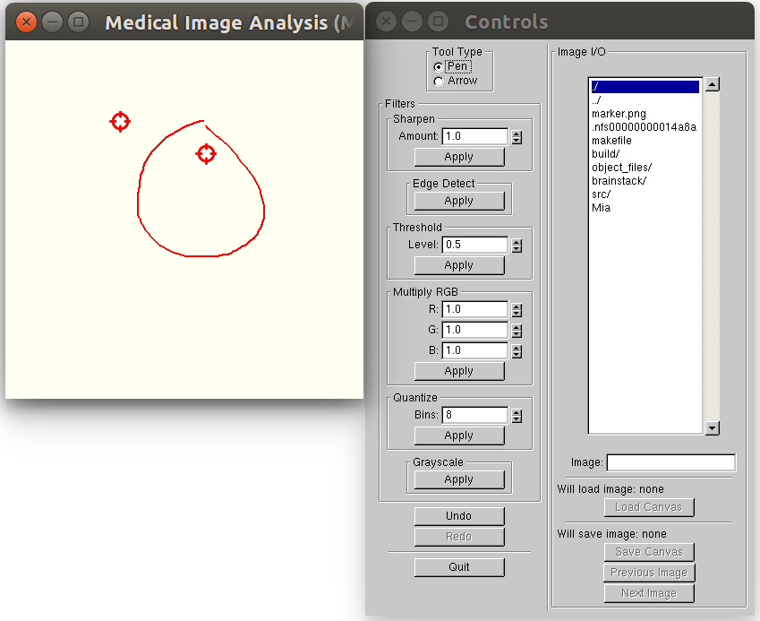
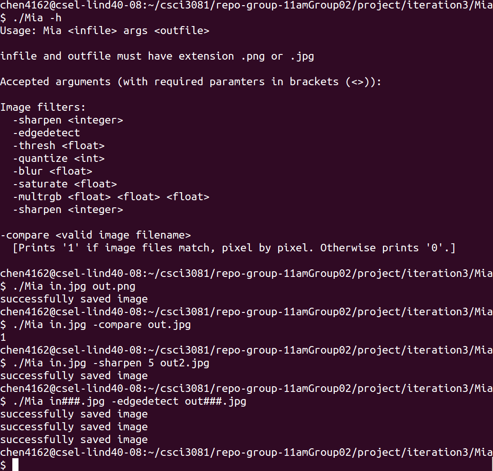

Getting Started with Mia
When you run the mia application, it will show a window like below.
The left part is the canvas and you can draw picture or loading and saving images in JPEG and PNG format.
There are two modes provided for you when you using mia, the graphical mode and command line mode:
Graphic Mode
When you type ./Mia, you actually enter the graphic mode.
In this mode, the stamp is a red arrow for annotaing medical images.
A red pen is useful for the same reason. You can see that from the image.
We also provide some excellent filters for you: sharpen, edge detection, threshold, quantize, covert to grayscale.
You can choose the amount you like and click the button to apply them.
Our application allows you to open a stack of images that are formatted as follows:
< file name root> ###.<extension >
The #'s represent an identification number, and one '#' is used for each digit. For example, if you have images with 5-digit identification numbers, you use five #'s. Use the previous and next button to save the current image and load the next consecutive image.

Command Line Mode
If you want test our application or you need help, you can type the following command for different purpose:
1. Display help:
./Mia -h
2. Convert image in JPEG to PNG:
./Mia in.jpg out.png
3. Compare the images:
./Mia in.jpg -compare out.jpg
If the images are the same, pixel for pixel, '1' is printed. Otherwise, '0' is printed.
4. We also support sharpen, edgedection, thresh, quantize. blur, saturate, multrgb if you type the following commands. Required parameters are listed in brackets (<>):
-sharpen < integer >
-edgedetect
-thresh < float >
-quantize < int >
-blur < float >
-saturate < float >
-multrgb < float >,< float >, < float >
For example,
./Mia in.jpg -sharpen 5 out.jpg
produces a filtered version of in.jpg with the sharpen filter with a strength of 5.
5. Edit a stack of numbered images:
./Mia in###.jpg -edgedetect out###.jpg
